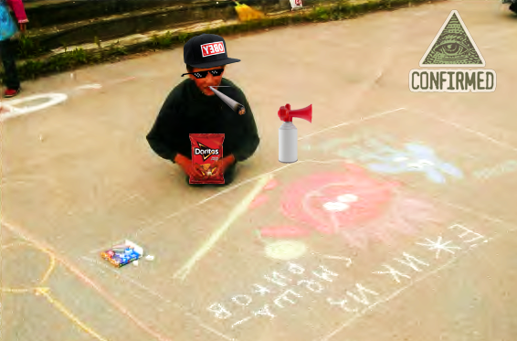
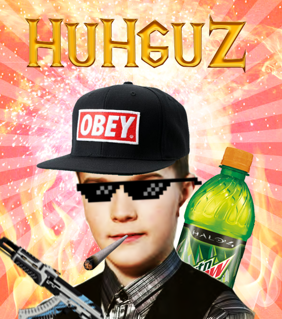
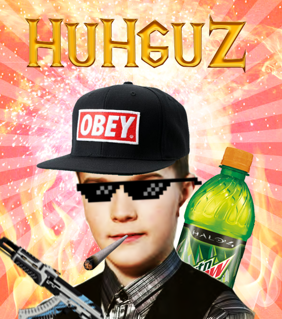

Welcome!
Добро пожаловать! На этом сайте вы можете разузнать обо мне! А именно:
- Как я появился;
- Кто меня создал;
- Чем я увлекаюсь;
- Чего бы мне хотелось в будущем;
- Всё о моём детстве;
- Вы сможете глянуть на мои фоточки (Да, правда, я впервые покажу свои фотки!);
- И, конечно же, юным веб-мастерам будет интересно узнать о том, как создавался этот сайт;
А узнать о ком именно? Об Илье Лукьянове, студенте II курса, написавшего этот сайт на конец года. Приятного чтения, надеюсь, вам понравится!
Да, да, я помню, что обещал показать свои фотки. Помню... Ну, тогда ловите пару моих фотографий:



Надеялись, что увидите меня полностью? Ы-гы-гы, нет, фиг вам.